| 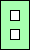 | | |
1. Given a m×n rectangle, what is the largest area that can be filled with non-overlapping copies of these letters? In particular, what are the answers for n×n squares?
2. Given a m×n rectangle, what is the smallest area of letters that will cover that rectangle? In particular, what are the answers for n×n squares?
3. We will call two collections of letters X and Y equivalent if there is some collection of letters Z and a region S so that the letters X and Z tile S, and the letters Y and Z also tile S. Can you find some small regions S that can be tiled with two different collections of letters? Given X and Y, what is the smallest collection Z you can find to show X = Y? Can you prove that any two collections of letters with the same area are equivalent?
| m \ n | 3 | 4 | 5 | 6 | 7 | 8 | 9 |
|---|---|---|---|---|---|---|---|
| 5 | 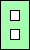 13 | 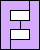 16 | 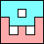 22 | ||||
| 6 | 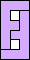 16 | 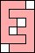 20 | 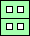 26 | 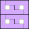 32 | |||
| 7 | 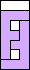 16 | 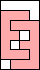 20 |  31 | 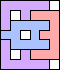 37 (GS) | 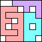 40 | ||
| 8 | 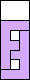 16 | 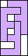 24 | 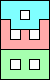 35 | 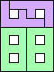 42 | 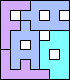 50 (GS) | 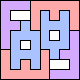 58 (GS) | |
| 9 | 22 | 28 | 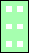 39 | 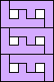 48 | 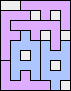 54 (GS) | 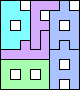 63 (GS) | 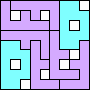 72 (GS) |
| 10 | 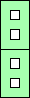 26 | 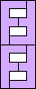 32 | 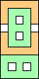 44 | 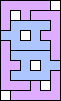 54 (MM) | 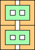 62 | 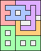 72 (GS) | 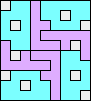 80 (GS) |
Here are the densest known squares:
|
| m \ n | 1 | 2 | 3 | 4 | 5 |
|---|---|---|---|---|---|
| 2 | 8 | 12 | |||
| 3 | 8 | 16 | 16 | ||
| 4 | 8 | 16 | 16 | 22 | |
| 5 | 8 | 16 | 18 | 24 | 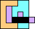 29 |
| 6 | 16 | 16 | 20 | 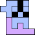 30 | 34 |
| 7 | 16 | 24 | 26 | 34 (BH) | 40 (GT) |
| 8 | 16 | 28 | 32 | 38 (GS) | 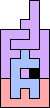 45 |
| Equation | Add | Picture |
|---|---|---|
| A C = E2 | B | 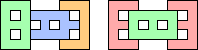 |
| E3 = A2 F | B2 | 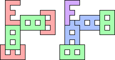 |
| A2 = D E | B2 E F2 | 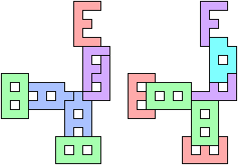 (George Sicherman) |
| A4 = D2 E2 | B2 | 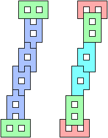 (George Sicherman) |
| D F = E2 | F2 | 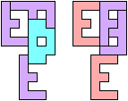 (George Sicherman) |
| E4 = F5 | ||
| A2 E2 = C2 D2 | E2 F4 | |
| B3 = A C2 E | E | |
| B3 = C E3 | A | (George Sicherman) |
| D2 = F3 | E2 F2 | (Bryce Herdt) |
| C2 = E F | A2 B2 E | (Bryce Herdt) |
| A D = B E | B C E2 F3 | (Bryce Herdt) |
Using these substitutions, we can prove that any two sets of letter polyominoes with equal area are equal. Use A D = B E repeatedly to remove B's. Then use D E = A2 repeatedly to remove D's. Then use A C = E2 repeatedly to remove A's. Then there will be an even number of C's (since they have odd area and E's and F's have even area) that can be removed with repeated use of C2 = E F. Then only E's and F's will remain, in a 4:5 ratio, and they can be removed with repeated use of E4 = F5!
If you can extend any of these results, please e-mail me. Click here to go back to Math Magic. Last updated 3/3/09.